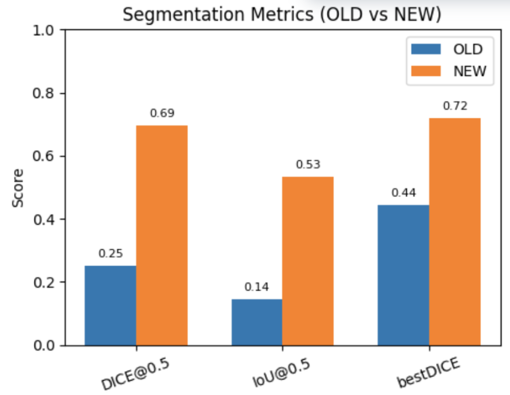
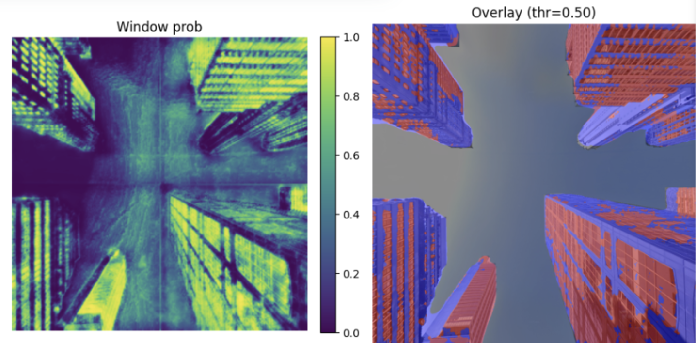

Urbanization is one of the most significant drivers of global biodiversity loss (Simkin et al., 2022). Cities, particularly those located in biodiversity hotspots (Ives et al., 2015) and along migratory bird routes (Yang et al., 2024), have emerged as critical frontiers for wildlife conservation. While urban environments can offer relatively warmer conditions due to the urban heat island (UHI) effect (Bonnet-Lebrun et al, 2020) and increased availability of anthropogenic food resources (Chong et al., 2014), they also impose novel ecological pressures.
Despite increased awareness of urban bird mortality, most large-scale studies of the built environment’s impact on birds rely on top-down remote sensing, such as satellite imagery (Tan et al., 2024). These approaches are constrained by the limited spatial and temporal resolution of the sensors and often overlook fine-grained, vertical architectural features that influence bird behavior. In contrast, bottom-up field methods rely heavily on citizen science efforts.
This project addresses that gap by developing a scalable, generalizable framework that integrates multiple open-source datasets. It leverages street-level imagery from platforms like Google Street View, coupled with long-term avian mortality records from community science platforms such as iNaturalist and eBird. By fusing bottom-up bird collision data with automated top-down image-based modeling of urban façades and vegetation structure, the project aims to build reproducible workflows that can be applied to diverse cities and spatial contexts. This integrated approach offers the potential to significantly enhance our understanding of how urban form influences bird survival, while reducing reliance on manual field surveys and enabling broader-scale conservation planning. It also aims to provide suggestions on the development of more biodiversity friendly buildings across cities for policy making and urban planning.
 